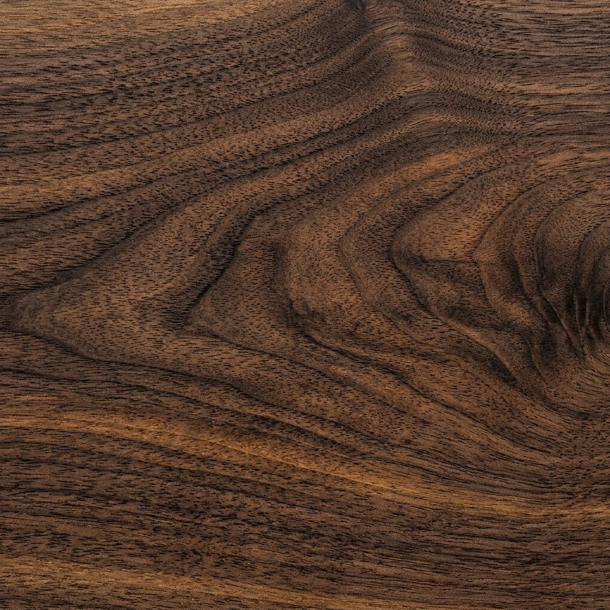

Solid Hardwood Janka: 1,010 lbfAmerican Black Walnut
Juglans nigra — Appalachian RegionCelebrated for expressive cathedral figure, deep mocha to purple-tinted undertones, and velvet chatoyancy. Sourced from single-flitch logs sequence-matched across door runs.
Density: 660 kg/m³
Workability: Superior Hand-Planing
Primary Discipline: Wardrobes, TV Consoles, Pivot Doors